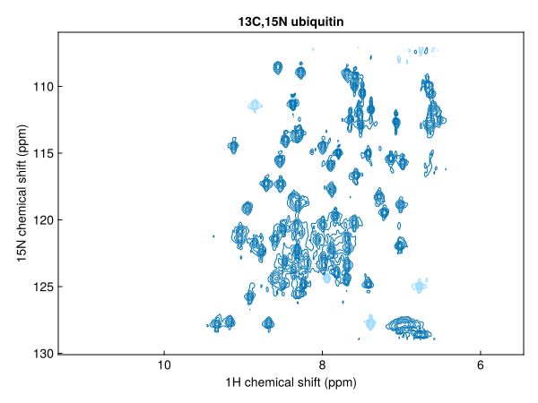
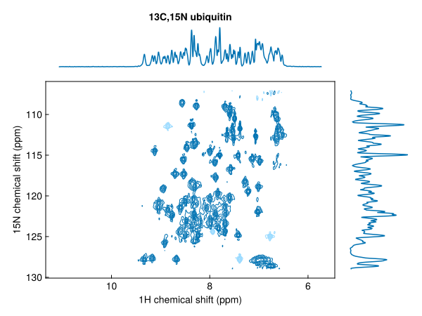
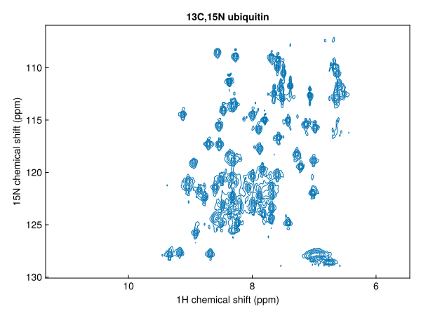
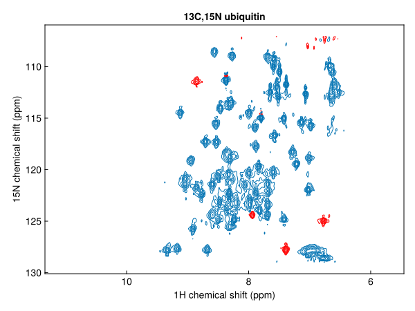
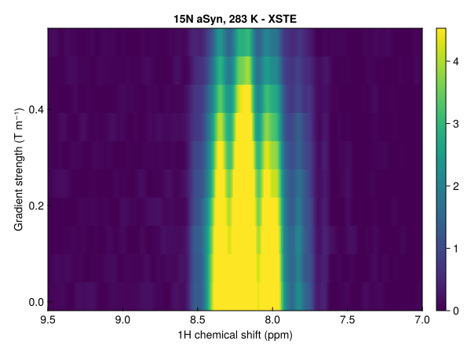
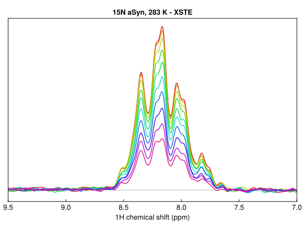
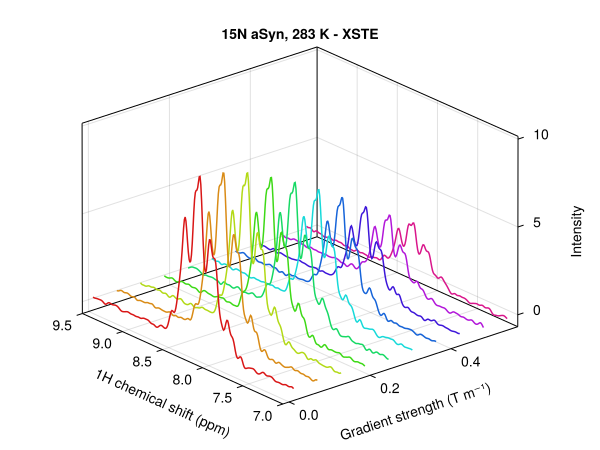
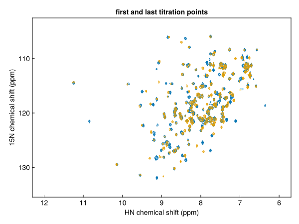
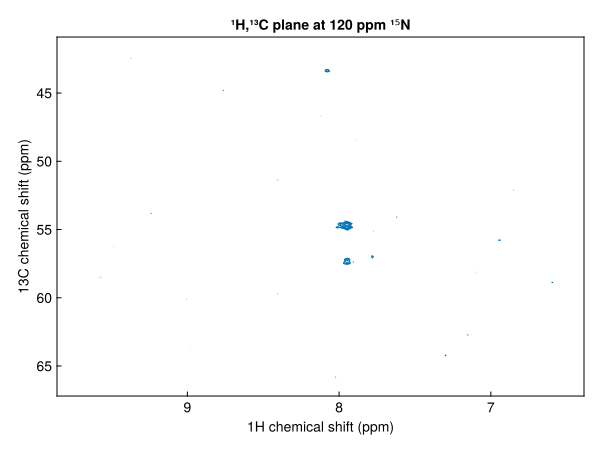

Plot 2D spectra
nmrplot plots 2D spectra as contour plots, with contour levels set from the noise level.
using NMRTools
using CairoMakie # static figures; use GLMakie for interactiveA single spectrum
spec2d = exampledata("2D_HN")
fig = nmrplot(spec2d)
Add 1D projections along either axis:
fig = nmrplot(exampledata("2D_HN"), xprojection=true, yprojection=true)
Plot a series of spectra in one call; colours cycle automatically and a legend can be added:
fig = nmrplot(exampledata("2D_HN_titration"), legend=:lt)
Contour colours and levels
Negative contours are shown by default as a faded version of the positive colour. Disable them or set a different colour:
fig = nmrplot(spec2d; negcontours=false)
fig = nmrplot(spec2d; negcolor=:red)
Pass levels as an integer to change the number of contour levels, or as a vector of absolute values to use explicit levels:
nmrplot(spec2d; levels=8) # 8 geometric levels from 5σ
nmrplot(spec2d; levels=[2e6, 4e6, 8e6]) # explicit positive levelsspacing sets the geometric ratio between levels (default 1.7):
nmrplot(spec2d; spacing=2.0, levels=10)Keyboard navigation (GLMakie)
In GLMakie, press ↑ / ↓ to raise or lower all contour levels in the figure by one step (multiplied/divided by spacing). The key repeats while held. This works for any spectrum added with nmrplot or nmrplot!.
Pseudo-2D spectra
Pseudo-2D spectra (one frequency + one non-frequency dimension) support three display styles via the style keyword:
style | Description |
|---|---|
:heatmap | colour map (default) |
:flat | overlaid 1D slices |
:waterfall | 3D slice view |
diffusiondata = exampledata("pseudo2D_XSTE")
diffusiondata = setgradientlist(diffusiondata, LinRange(0.02, 0.98, 10))
fig = nmrplot(diffusiondata, xlims=(7, 9.5))┌ Warning: a maximum gradient strength of 0.55 T m⁻¹ is being assumed - this is roughly correct for modern Bruker systems but calibration is recommended
└ @ NMRTools.NMRBase ~/work/NMRTools.jl/NMRTools.jl/src/NMRBase/nmrdata.jl:315
fig = nmrplot(diffusiondata, xlims=(7, 9.5), style=:flat)
fig = nmrplot(diffusiondata, xlims=(7, 9.5), style=:waterfall)
Normalising a series
Pass a reference spectrum as normalize to put several spectra on the same contour levels, taking account of differences in scans and receiver gain:
spectra = exampledata("2D_HN_titration")
fig = nmrplot(spectra[[1, 11]]; normalize=spectra[1], title="first and last titration points")
3D spectra
Plot a plane or a strip of a 3D spectrum by selecting it first:
hnca = exampledata("3D_HNCA")
fig = nmrplot(hnca[:, Near(120.0), :]; title="¹H,¹³C plane at 120 ppm ¹⁵N")
Peaks
Overlay a peak list with nmrplot!(ax, peaks); see Peaks and peak lists.
Saving figures and layout
Saving and composing figures works as for 1D spectra; see Plot 1D spectra.
See Makie plot options for every keyword.